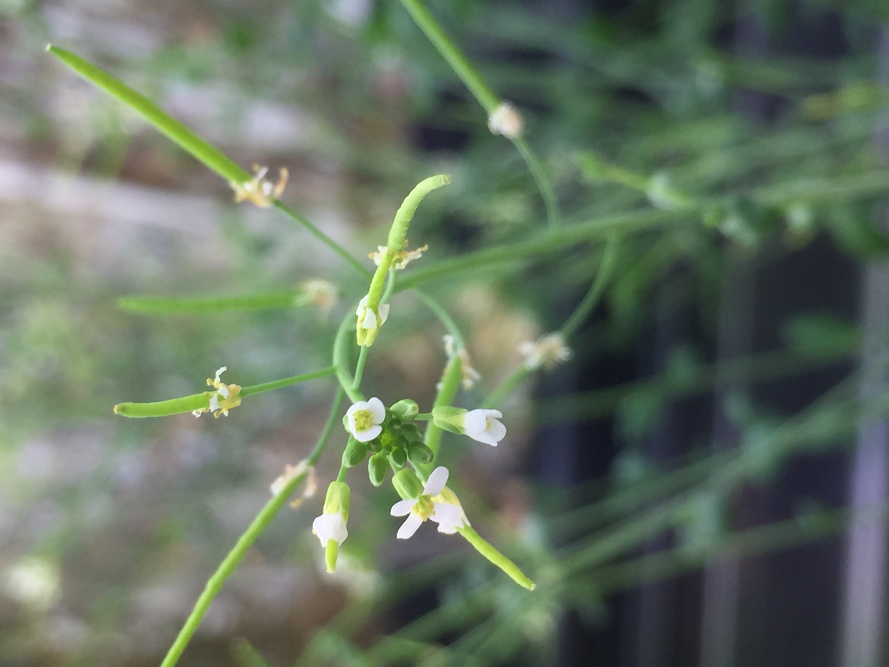

About Me
I am an evolutionary biologist and population geneticist with a focus on rapid adaptation. I’m currently studying bacterial populations in the human gut microbiome, where evolutionary change occurs on timescales of human months and years.
Education
PhD, Ecology and Evolutionary Biology
2022 - | University of California, Los Angeles
M.S., Statistics
2021 - 2022 | The University of Chicago
B.S., Biology, minor Statistics
2017 - 2021 | The University of Chicago
Research Background

Arabidopsis thaliana flowering in a growth room at UChicago. All of my pre-PhD research involved this beautiful plant in some way :)
Development and analysis of GWAS test statistics in epistatic backgrounds (UChicago)
Mentor: Mary Sara McPeek
I helped to develop a GWAS model testing for genetic interactions between loci. This model corrects for the t-statistic and improves power by utilizing both allele fre- quency and distributions of putatively interacting SNPs. I led the analysis of this model on real-world data, capturing epistatic loci in flowering time in Arabidopsis thaliana to successfully show an inflated t-statistic and subsequent correction using our methodology.
Genetic basis of coinfection and pathogen evolution (UChicago)
Mentors: Joy Bergelson (now NYU), Andrew Gloss (now University of Georgia)
I helped to lead a multiyear project searching for the genetic basis of synergistic and competitive interactions between different strains of a bacterial pathogen (Pseudomonas viridiflava) during coinfection of host plant (Arabidopsis thaliana). I designed and implemented a novel, high-throughput method for tracking the abundance of coinfecting bacterial strains within experimentally infected plants, which relied on transforming these strains to produce a light-emitting enzyme (luciferase). I then implemented novel GWAS methodology to identify bacterial genes shaping these coinfection outcomes, and conducted subsequent evolutionary analyses on these hits.